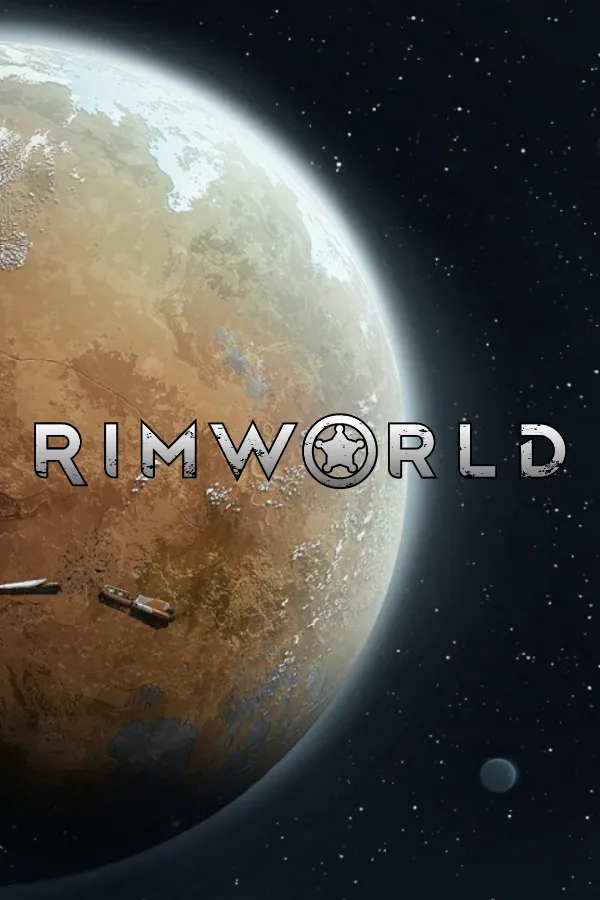

림월드란?
공상과학 정착지 시뮬레이터

림월드는 지능형 AI 이야기꾼이 주도하는 공상과학 정착지 시뮬레이터 게임입니다.
심리, 생태, 싸움, 기후, 외교, 의학 등 많은 것들을 시뮬레이션하여 이야기를 생성하는 게임입니다.
림월드의 주요 특징
핵심 플레이 요소
- 림월드는 정착지를 건설하고 발전시킬 수 있다.
- 정착지 주민들은 다양한 성격과 능력을 가지고 있다.
- 정착지에서는 계속 예상하지 못하는 사건들이 발생한다.
- 플레이 자유도가 굉장히 높다.

림월드에서 재미있는 점
예측 불가능한 스토리와 긴장감
매번 새로운 게임을 시작할 때마다 게임 속에 있는 AI 이야기꾼이 다양하고 다른 사건들을 발생시켜서 계속 새로운 경험을 쌓게 해줍니다.
본인이 쌓아올린 정착지가 어느 한순간에 망하게 되는 긴장감 속에서 게임을 플레이하게 되는 것도 림월드의 재미있는 점입니다.

림월드를 추천하는 이유
높은 자유도와 확장성
게임을 진행시키는 AI 이야기꾼마다 성격이 달라서 자신이 원하는 방식대로 플레이할 수 있습니다.
또한 많은 DLC와 모드들이 있어서 본인이 원하는 새로운 이야기를 만들어가는 것도 가능합니다.